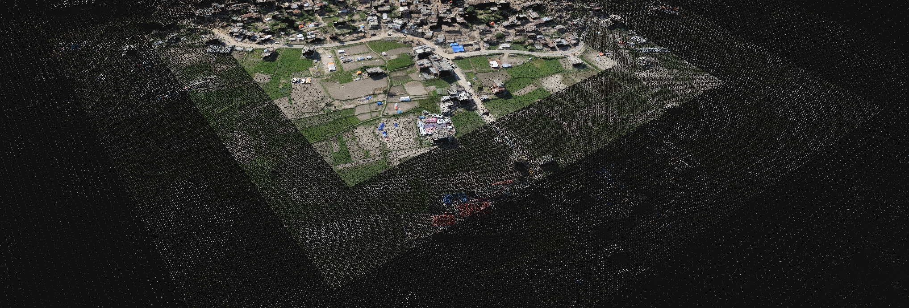
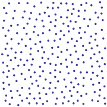
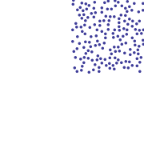
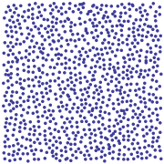
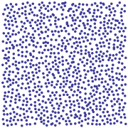
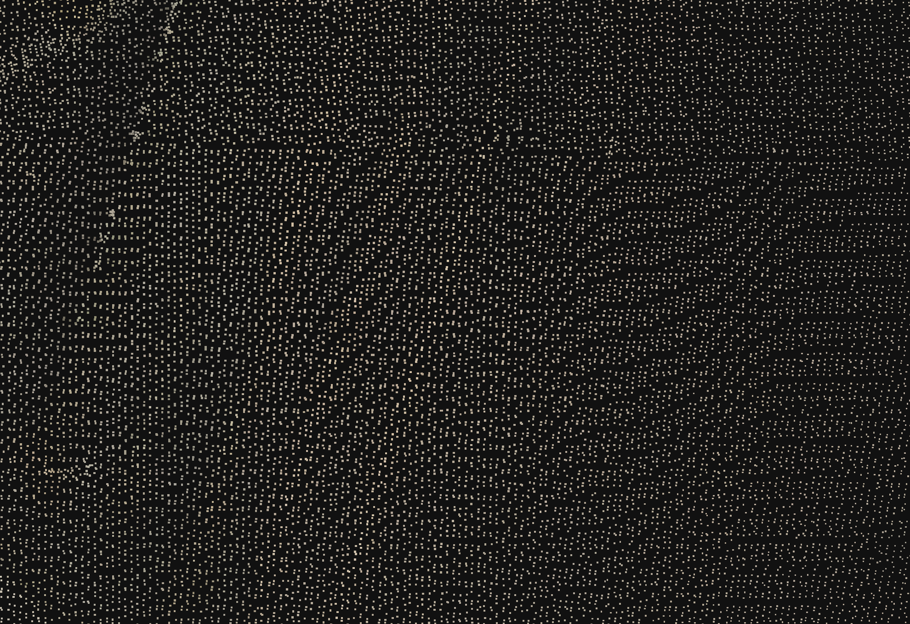
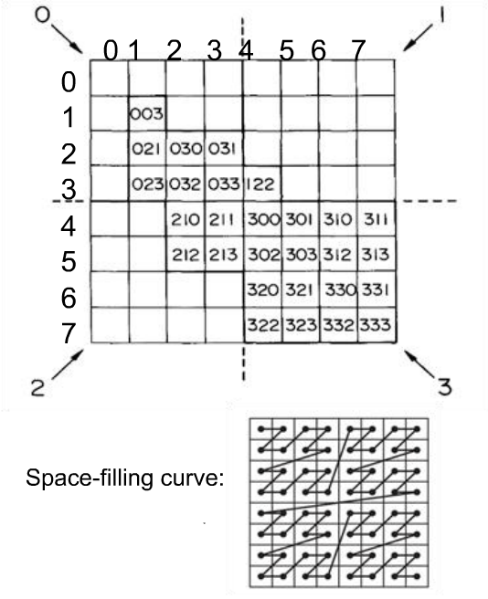
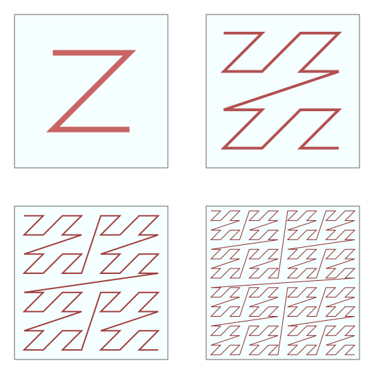
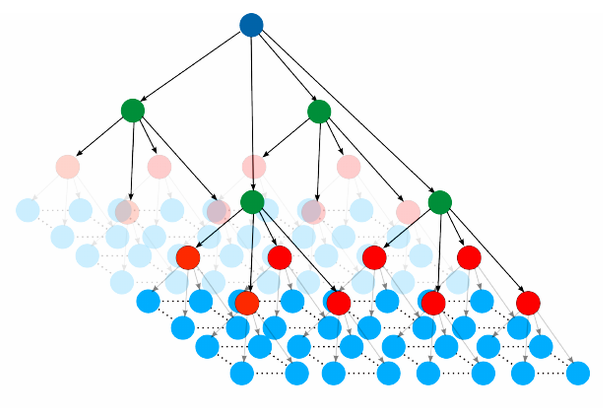

500+ Billion Points
Organizing Point Clouds as Infrastructure
Connor Manning
The problem
Can we put Iowa's lidar in a web browser?

Iowa lidar collection
- ≈ 37,000 files
- ≈ 170 billion points
- > 4.5 TB uncompressed
- > 400 GB compressed

A point cloud service
- Client-controlled access
- Hierarchical
- Random-access
- Dynamic resolution
- Flexible
- Fragmented dataset → single logical unit
Adapting the data as-is?
- Difficult to access
- Difficult to manage
- Visualization only in pieces
 Yes, Iowa is flat
Yes, Iowa is flat
Need for reorganization
- Cannot meet these needs with a meta-index
- Would require too much dynamic work
- Up-front cost is ok to trivialize later work
- TODO Picture?
Constraints
- Memory
- Losslessness
- Modifiability
- Visualization

Assumptions
- Availability of scalable cloud computing
- A parallelizable problem
- Distributed filesystem

Lone Star Geyser
Geysers are kind of like clouds, but cooler.
Data source: RS/GIS CRREL USACE
Goal: a massive octree
- Increase depth → increase resolution

Quadtree depth layering
Data source: Vanuatu village, Nepal.
Global DIRT
- Spatially distinct → trivially parallelizable

Quadtree splitting
By David Eppstein, Public Domain, 🔗
- Stable & flexible
- Insertion order doesn't matter
- No concept of "balance"

By contrast: a KD-tree - where order matters
By KiwiSunset at the English language Wikipedia, CC BY-SA 3.0, 🔗
Octrees
- The basic implementation is pointer-based
- > 10 TB just for the (64-bit) pointers for Iowa

A classical octree
By WhiteTimberwolf - Own work, CC BY-SA 3.0, 🔗
Buckets of points?
- Very common
- Minimum addressable node consists of n points
-
O(depth * bucketSize) if per-point resolution is needed


 

Point bucketing
Source: Potree documentation 🔗
Bucket example
- Strict spacing for Iowa data
- Average depth = 10
- Bucket size = 65,536
- Average comparisons per point: 655,360
-
> 1017 comparisons for IA
Discrete split step?
- Split bucketed node when numPoints > bucketSize
- Decimation step reduces concurrent throughput
- Will happen to high-traffic nodes frequently

Lack of spacing guarantee - effect on visualization
Linearizing the tree
- For a single depth: Z-order curve
- Entirely positionally based - zero theoretical waste

Z-order curve for depth 3
By user Jace,
🔗

Z-order curve for depth 3
By David Eppstein, based on an image by Hesperian. Own work, CC BY-SA 3.0, 🔗
Mathematical properties
- Spacing guarantee in O(1) comparisons per depth
- Chunk on depth boundaries: can query LoDs with ≥ & <
- Hop down the array in constant time
- Never concerned with more than one point (concurrency!)
- Cache coherence

Quadtree layering
From Towards Building Deep Networks with Bayesian Factor Graphs by Buonanno & Palmieri 🔗
Chunk splitting
- Trivial to bound chunks spatially (parallelizable!)
- Sparse-chunking optimization
- ^order of magnitude of key reduction)
# Post-implementation discussion stuff (TODO)
## What does entwine enable?
- Quick overview of Greyhound
- Then speck.ly/potree interface
- CLI invocation samples, show "entwine build ..."
- Show speed results - coordinator with AHN set

## Links
- Entwine - entwine.io
- Plasio - speck.ly